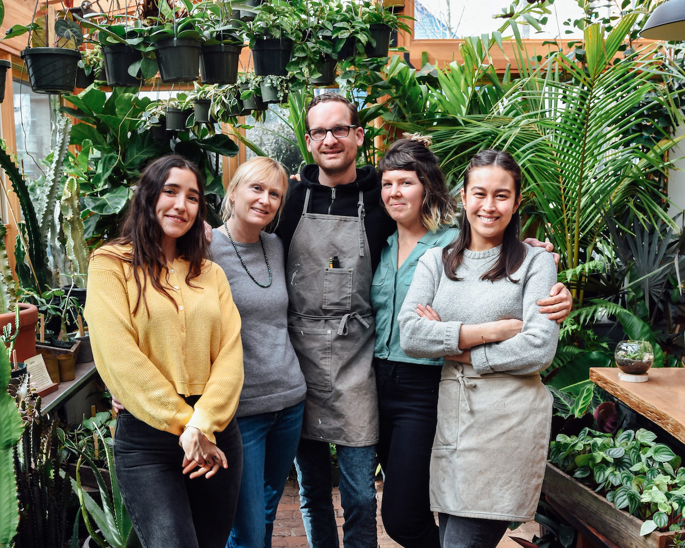

About Justropic Plants!
Hi there! We are the Justo family bringing you fresh foliage to liven up your home decor! Justropic Plants is a family-owned houseplant store based out of Pittsburgh, CA. We offer a vast selection of houseplants to fit your needs. Our goal is to bring greenery to your homes and provide natural air filtration with our plants. The selection at Justropic Plants range from a small tree like our Braided Ficus Benjamina to the flowering plant know as the orange birds of paradise. Our supply of plants come from local nurseries, and are taken care of at our own home. We ONLY offer delivery to customers located in San Francisco for a fee of $10 on top of the base purchase price.
Hi there! We are the Justo family bringing you fresh foliage to liven up your home decor! Justropic Plants is a family-owned houseplant store based out of Pittsburgh, CA. We offer a vast selection of houseplants to fit your needs. Our goal is to bring greenery to your homes and provide natural air filtration with our plants. The selection at Justropic Plants range from a small tree like our Braided Ficus Benjamina to the flowering plant know as the orange birds of paradise. Our supply of plants come from local nurseries, and are taken care of at our own home. We ONLY offer delivery to customers located in San Francisco for a fee of $10 on top of the base purchase price.